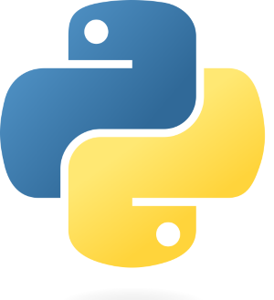
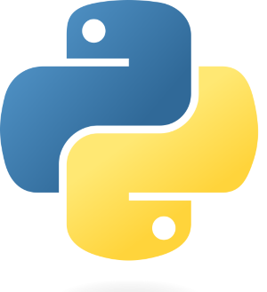

Um pouco sobre mim:
Fala galera, meu nome é Vinícius, sou do Rio de Janeiro-RJ e estou aqui para compartilhar um pouco da minha trajetória profissional. Antes de entrar nos detalhes, permitam-me apresentar-me. Estudei minha infância em escola pública e, durante a adolescência, comecei a frequentar uma escola particular, graças aos meus pais que sempre lutaram por proporcionar-me uma excelente educação. Serei eternamente grato a eles!
Minha Trajetória Profissional/Acadêmica:
Atualmente, estou cursando Engenharia de Computação na Veiga de Almeida, no quinto período. Quando vocês leem isso, podem pensar que já sei bastante, mas na realidade, tive dificuldades no início da faculdade. Achava que dominaria a programação por entender bastante de computadores, mas logo percebi que não seria tão fácil. Isso me fez enxergar as coisas de outra forma, aprendi a estudar as linguagens de programação da maneira certa.
Ainda enfrentei a dúvida de qual linguagem escolher, pulando de uma para outra e comprando cursos, o que resultava em perda de tempo. Com o tempo, percebi que deveria escolher entre back-end e front-end, uma conclusão que demandou quase três anos de pesquisa. Em 2023, descobri canais incríveis que me ajudaram a definir meu caminho, como cursoemvideo, Código Fonte TV, Lucas Montano, Fernanda Kipper | Dev, Rafaella Ballerini, Attekita Dev. Um agradecimento especial ao Gustavo Guanabara por seu curso maravilhoso, que me permitiu aprender de forma eficaz. Sua didática e carisma merecem todo reconhecimento.
Graças a essas pessoas, descobri minha paixão: ser um desenvolvedor front-end. Agradeço a todos por me mostrarem a luz no fim do túnel. Agora consigo caminhar com confiança, explorar um mar de possibilidades!
Linguagens que ja passei:
 
